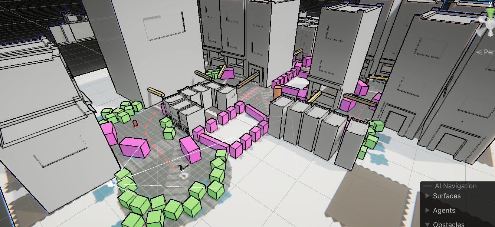
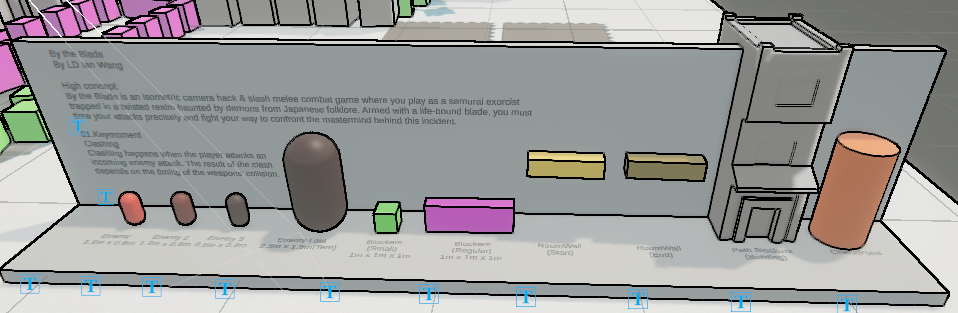
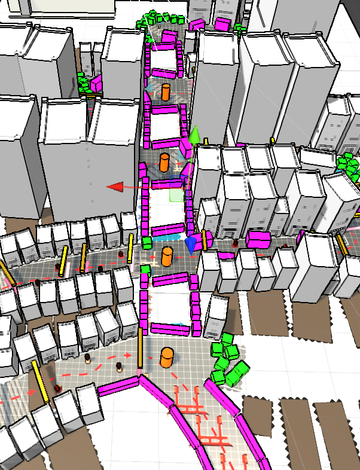

By The Blade
Unity, Feb - Aug 2025 — Programmer
3D isometric hack-and-slash melee combat game, where players take on the role of a samurai trapped in a realm overtaken by ancient Japanese Yokai. The objective is to master the art of swordsmanship and find a way to escape.
Technical Contributions:
• Using animation layers to blend multiple animations into one to meet specific requirements.
• Using Inverse Kinematics to improve interaction between player and enemies in the animation aspect.
• Programmed two types of enemies using the GOAP AI system.
• Designed final boss attack patterns and implemented them in the game.
• Audio implementation.
Level Design
Level design documentation and whitebox layouts showcasing the game's isometric city environment, enemy placement, and critical path progression.



